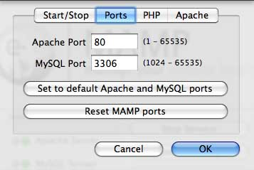

<!doctype html>
<html lang="en-US">

<!-- Mirrored from www.aschroder.com/2009/02/how-to-install-mamp-on-your-macbook/ by HTTrack Website Copier/3.x [XR&CO'2014], Wed, 30 Aug 2023 22:29:26 GMT -->
<!-- Added by HTTrack --><meta http-equiv="content-type" content="text/html;charset=UTF-8" /><!-- /Added by HTTrack -->
<head>
<meta charset="UTF-8">
<meta name="viewport" content="width=device-width, initial-scale=1, maximum-scale=1.0, user-scalable=no">
<link rel="profile" href="http://gmpg.org/xfn/11">
<link rel="pingback" href="../../../xmlrpc.php">

<title>How to install MAMP on your MacBook | ASchroder.com</title>

<!-- All in One SEO Pack 2.4.2 by Michael Torbert of Semper Fi Web Design[289,357] -->
<meta name="description"  content="A full series on setting your Mac up for Magnto ecommerce development, Starting with the first step - installing MAMP." />

<meta name="keywords"  content="mamp,magento,apache,mysql,mac,install,how to" />

<!-- /all in one seo pack -->
<link rel='dns-prefetch' href='http://fonts.googleapis.com/' />
<link rel='dns-prefetch' href='http://s.w.org/' />
<link rel="alternate" type="application/rss+xml" title="ASchroder.com &raquo; Feed" href="../../../feed/index.html" />
<link rel="alternate" type="application/rss+xml" title="ASchroder.com &raquo; Comments Feed" href="../../../comments/feed/index.html" />
<link rel="alternate" type="application/rss+xml" title="ASchroder.com &raquo; How to install MAMP on your Leopard Mac Comments Feed" href="feed/index.html" />
<!-- This site uses the Google Analytics by MonsterInsights plugin v6.2.4 - Using Analytics tracking - https://www.monsterinsights.com/ -->
<script type="text/javascript" data-cfasync="false">
		var disableStr = 'ga-disable-UA-6477134-1';

	/* Function to detect opted out users */
	function __gaTrackerIsOptedOut() {
		return document.cookie.indexOf(disableStr + '=true') > -1;
	}

	/* Disable tracking if the opt-out cookie exists. */
	if ( __gaTrackerIsOptedOut() ) {
		window[disableStr] = true;
	}

	/* Opt-out function */
	function __gaTrackerOptout() {
	  document.cookie = disableStr + '=true; expires=Thu, 31 Dec 2099 23:59:59 UTC; path=/';
	  window[disableStr] = true;
	}
		(function(i,s,o,g,r,a,m){i['GoogleAnalyticsObject']=r;i[r]=i[r]||function(){
		(i[r].q=i[r].q||[]).push(arguments)},i[r].l=1*new Date();a=s.createElement(o),
		m=s.getElementsByTagName(o)[0];a.async=1;a.src=g;m.parentNode.insertBefore(a,m)
	})(window,document,'script','http://www.google-analytics.com/analytics.js','__gaTracker');

	__gaTracker('create', 'UA-6477134-1', 'auto');
	__gaTracker('set', 'forceSSL', true);
	__gaTracker('send','pageview');
</script>
<!-- / Google Analytics by MonsterInsights -->
		<script type="text/javascript">
			window._wpemojiSettings = {"baseUrl":"https:\/\/s.w.org\/images\/core\/emoji\/2.3\/72x72\/","ext":".png","svgUrl":"https:\/\/s.w.org\/images\/core\/emoji\/2.3\/svg\/","svgExt":".svg","source":{"concatemoji":"http:\/\/www.aschroder.com\/wp-includes\/js\/wp-emoji-release.min.js?ver=4.8.15"}};
			!function(a,b,c){function d(a){var b,c,d,e,f=String.fromCharCode;if(!k||!k.fillText)return!1;switch(k.clearRect(0,0,j.width,j.height),k.textBaseline="top",k.font="600 32px Arial",a){case"flag":return k.fillText(f(55356,56826,55356,56819),0,0),b=j.toDataURL(),k.clearRect(0,0,j.width,j.height),k.fillText(f(55356,56826,8203,55356,56819),0,0),c=j.toDataURL(),b!==c&&(k.clearRect(0,0,j.width,j.height),k.fillText(f(55356,57332,56128,56423,56128,56418,56128,56421,56128,56430,56128,56423,56128,56447),0,0),b=j.toDataURL(),k.clearRect(0,0,j.width,j.height),k.fillText(f(55356,57332,8203,56128,56423,8203,56128,56418,8203,56128,56421,8203,56128,56430,8203,56128,56423,8203,56128,56447),0,0),c=j.toDataURL(),b!==c);case"emoji4":return k.fillText(f(55358,56794,8205,9794,65039),0,0),d=j.toDataURL(),k.clearRect(0,0,j.width,j.height),k.fillText(f(55358,56794,8203,9794,65039),0,0),e=j.toDataURL(),d!==e}return!1}function e(a){var c=b.createElement("script");c.src=a,c.defer=c.type="text/javascript",b.getElementsByTagName("head")[0].appendChild(c)}var f,g,h,i,j=b.createElement("canvas"),k=j.getContext&&j.getContext("2d");for(i=Array("flag","emoji4"),c.supports={everything:!0,everythingExceptFlag:!0},h=0;h<i.length;h++)c.supports[i[h]]=d(i[h]),c.supports.everything=c.supports.everything&&c.supports[i[h]],"flag"!==i[h]&&(c.supports.everythingExceptFlag=c.supports.everythingExceptFlag&&c.supports[i[h]]);c.supports.everythingExceptFlag=c.supports.everythingExceptFlag&&!c.supports.flag,c.DOMReady=!1,c.readyCallback=function(){c.DOMReady=!0},c.supports.everything||(g=function(){c.readyCallback()},b.addEventListener?(b.addEventListener("DOMContentLoaded",g,!1),a.addEventListener("load",g,!1)):(a.attachEvent("onload",g),b.attachEvent("onreadystatechange",function(){"complete"===b.readyState&&c.readyCallback()})),f=c.source||{},f.concatemoji?e(f.concatemoji):f.wpemoji&&f.twemoji&&(e(f.twemoji),e(f.wpemoji)))}(window,document,window._wpemojiSettings);
		</script>
		<style type="text/css">
img.wp-smiley,
img.emoji {
	display: inline !important;
	border: none !important;
	box-shadow: none !important;
	height: 1em !important;
	width: 1em !important;
	margin: 0 .07em !important;
	vertical-align: -0.1em !important;
	background: none !important;
	padding: 0 !important;
}
</style>
<link rel='stylesheet' id='yarppWidgetCss-css'  href='../../../wp-content/plugins/yet-another-related-posts-plugin/style/widget101e.css?ver=4.8.15' type='text/css' media='all' />
<link rel='stylesheet' id='wp-syntax-css-css'  href='../../../wp-content/plugins/wp-syntax/css/wp-syntax4963.css?ver=1.1' type='text/css' media='all' />
<link rel='stylesheet' id='storefront-style-css'  href='../../../../cdn.aschroder.com/wp-content/themes/storefront/style5bf8.css?ver=2.2.5' type='text/css' media='all' />
<style id='storefront-style-inline-css' type='text/css'>

			.main-navigation ul li a,
			.site-title a,
			ul.menu li a,
			.site-branding h1 a,
			.site-footer .storefront-handheld-footer-bar a:not(.button),
			button.menu-toggle,
			button.menu-toggle:hover {
				color: #333333;
			}

			button.menu-toggle,
			button.menu-toggle:hover {
				border-color: #333333;
			}

			.main-navigation ul li a:hover,
			.main-navigation ul li:hover > a,
			.site-title a:hover,
			a.cart-contents:hover,
			.site-header-cart .widget_shopping_cart a:hover,
			.site-header-cart:hover > li > a,
			.site-header ul.menu li.current-menu-item > a {
				color: #838383;
			}

			table th {
				background-color: #f8f8f8;
			}

			table tbody td {
				background-color: #fdfdfd;
			}

			table tbody tr:nth-child(2n) td,
			fieldset,
			fieldset legend {
				background-color: #fbfbfb;
			}

			.site-header,
			.secondary-navigation ul ul,
			.main-navigation ul.menu > li.menu-item-has-children:after,
			.secondary-navigation ul.menu ul,
			.storefront-handheld-footer-bar,
			.storefront-handheld-footer-bar ul li > a,
			.storefront-handheld-footer-bar ul li.search .site-search,
			button.menu-toggle,
			button.menu-toggle:hover {
				background-color: #ffffff;
			}

			p.site-description,
			.site-header,
			.storefront-handheld-footer-bar {
				color: #6d6d6d;
			}

			.storefront-handheld-footer-bar ul li.cart .count,
			button.menu-toggle:after,
			button.menu-toggle:before,
			button.menu-toggle span:before {
				background-color: #333333;
			}

			.storefront-handheld-footer-bar ul li.cart .count {
				color: #ffffff;
			}

			.storefront-handheld-footer-bar ul li.cart .count {
				border-color: #ffffff;
			}

			h1, h2, h3, h4, h5, h6 {
				color: #333333;
			}

			.widget h1 {
				border-bottom-color: #333333;
			}

			body,
			.secondary-navigation a,
			.onsale,
			.pagination .page-numbers li .page-numbers:not(.current), .woocommerce-pagination .page-numbers li .page-numbers:not(.current) {
				color: #6d6d6d;
			}

			.widget-area .widget a,
			.hentry .entry-header .posted-on a,
			.hentry .entry-header .byline a {
				color: #9f9f9f;
			}

			a  {
				color: #0228d1;
			}

			a:focus,
			.button:focus,
			.button.alt:focus,
			.button.added_to_cart:focus,
			.button.wc-forward:focus,
			button:focus,
			input[type="button"]:focus,
			input[type="reset"]:focus,
			input[type="submit"]:focus {
				outline-color: #0228d1;
			}

			button, input[type="button"], input[type="reset"], input[type="submit"], .button, .added_to_cart, .widget a.button, .site-header-cart .widget_shopping_cart a.button {
				background-color: #eeeeee;
				border-color: #eeeeee;
				color: #333333;
			}

			button:hover, input[type="button"]:hover, input[type="reset"]:hover, input[type="submit"]:hover, .button:hover, .added_to_cart:hover, .widget a.button:hover, .site-header-cart .widget_shopping_cart a.button:hover {
				background-color: #d5d5d5;
				border-color: #d5d5d5;
				color: #333333;
			}

			button.alt, input[type="button"].alt, input[type="reset"].alt, input[type="submit"].alt, .button.alt, .added_to_cart.alt, .widget-area .widget a.button.alt, .added_to_cart, .widget a.button.checkout {
				background-color: #333333;
				border-color: #333333;
				color: #ffffff;
			}

			button.alt:hover, input[type="button"].alt:hover, input[type="reset"].alt:hover, input[type="submit"].alt:hover, .button.alt:hover, .added_to_cart.alt:hover, .widget-area .widget a.button.alt:hover, .added_to_cart:hover, .widget a.button.checkout:hover {
				background-color: #1a1a1a;
				border-color: #1a1a1a;
				color: #ffffff;
			}

			.pagination .page-numbers li .page-numbers.current, .woocommerce-pagination .page-numbers li .page-numbers.current {
				background-color: #e6e6e6;
				color: #6d6d6d;
			}

			#comments .comment-list .comment-content .comment-text {
				background-color: #f8f8f8;
			}

			.site-footer {
				background-color: #f0f0f0;
				color: #6d6d6d;
			}

			.site-footer a:not(.button) {
				color: #333333;
			}

			.site-footer h1, .site-footer h2, .site-footer h3, .site-footer h4, .site-footer h5, .site-footer h6 {
				color: #333333;
			}

			#order_review {
				background-color: #ffffff;
			}

			#payment .payment_methods > li .payment_box,
			#payment .place-order {
				background-color: #fafafa;
			}

			#payment .payment_methods > li:not(.woocommerce-notice) {
				background-color: #f5f5f5;
			}

			#payment .payment_methods > li:not(.woocommerce-notice):hover {
				background-color: #f0f0f0;
			}

			@media screen and ( min-width: 768px ) {
				.secondary-navigation ul.menu a:hover {
					color: #868686;
				}

				.secondary-navigation ul.menu a {
					color: #6d6d6d;
				}

				.site-header-cart .widget_shopping_cart,
				.main-navigation ul.menu ul.sub-menu,
				.main-navigation ul.nav-menu ul.children {
					background-color: #f0f0f0;
				}

				.site-header-cart .widget_shopping_cart .buttons,
				.site-header-cart .widget_shopping_cart .total {
					background-color: #f5f5f5;
				}

				.site-header {
					border-bottom-color: #f0f0f0;
				}
			}
</style>
<link rel='stylesheet' id='storefront-icons-css'  href='../../../../cdn.aschroder.com/wp-content/themes/storefront/assets/sass/base/icons5bf8.css?ver=2.2.5' type='text/css' media='all' />
<link rel='stylesheet' id='storefront-fonts-css'  href='https://fonts.googleapis.com/css?family=Source+Sans+Pro:400,300,300italic,400italic,600,700,900&amp;subset=latin%2Clatin-ext' type='text/css' media='all' />
<script type='text/javascript' src='../../../../cdn.aschroder.com/wp-includes/js/jquery/jqueryb8ff.js?ver=1.12.4'></script>
<script type='text/javascript' src='../../../../cdn.aschroder.com/wp-includes/js/jquery/jquery-migrate.min330a.js?ver=1.4.1'></script>
<link rel='https://api.w.org/' href='../../../wp-json/index.html' />
<link rel="EditURI" type="application/rsd+xml" title="RSD" href="../../../xmlrpc0db0.php?rsd" />
<link rel="wlwmanifest" type="application/wlwmanifest+xml" href="../../../wp-includes/wlwmanifest.xml" /> 
<link rel='prev' title='How to set up Apache Virtual hosting on MAMP for Magento' href='../how-to-set-up-apache-virtual-hosting-on-mamp-for-magento/index.html' />
<link rel='next' title='5 Free Professional Magento Installations' href='../5-free-professional-magento-installations/index.html' />
<meta name="generator" content="WordPress 4.8.15" />
<link rel="canonical" href="index.html" />
<link rel='shortlink' href='../../../indexe539.html?p=151' />
<link rel="alternate" type="application/json+oembed" href="../../../wp-json/oembed/1.0/embed62f2.json?url=http%3A%2F%2Fwww.aschroder.com%2F2009%2F02%2Fhow-to-install-mamp-on-your-macbook%2F" />
<link rel="alternate" type="text/xml+oembed" href="../../../wp-json/oembed/1.0/embedc773?url=http%3A%2F%2Fwww.aschroder.com%2F2009%2F02%2Fhow-to-install-mamp-on-your-macbook%2F&amp;format=xml" />
</head>

<body class="post-template-default single single-post postid-151 single-format-standard no-wc-breadcrumb storefront-full-width-content right-sidebar">


<div id="page" class="hfeed site">
	
	<header id="masthead" class="site-header" role="banner" style="">
		<div class="col-full">

					<a class="skip-link screen-reader-text" href="#site-navigation">Skip to navigation</a>
		<a class="skip-link screen-reader-text" href="#content">Skip to content</a>
				<div class="site-branding">
			<div class="beta site-title"><a href="../../../index.html" rel="home">ASchroder.com</a></div><p class="site-description">Notes on Web Development</p>		</div>
		<div class="storefront-primary-navigation">		<nav id="site-navigation" class="main-navigation" role="navigation" aria-label="Primary Navigation">
		<button class="menu-toggle" aria-controls="site-navigation" aria-expanded="false"><span>Menu</span></button>
			<div class="primary-navigation"><ul id="menu-main-menu" class="menu"><li id="menu-item-1119" class="menu-item menu-item-type-custom menu-item-object-custom menu-item-home menu-item-1119"><a href="../../../index.html">Home</a></li>
<li id="menu-item-1118" class="menu-item menu-item-type-post_type menu-item-object-page menu-item-1118"><a href="../../../about/index.html">About</a></li>
<li id="menu-item-1872" class="menu-item menu-item-type-post_type menu-item-object-page menu-item-1872"><a href="../../../presentations/index.html">Presentations</a></li>
</ul></div><div class="handheld-navigation"><ul id="menu-main-menu-1" class="menu"><li class="menu-item menu-item-type-custom menu-item-object-custom menu-item-home menu-item-1119"><a href="../../../index.html">Home</a></li>
<li class="menu-item menu-item-type-post_type menu-item-object-page menu-item-1118"><a href="../../../about/index.html">About</a></li>
<li class="menu-item menu-item-type-post_type menu-item-object-page menu-item-1872"><a href="../../../presentations/index.html">Presentations</a></li>
</ul></div>		</nav><!-- #site-navigation -->
		</div>
		</div>
	</header><!-- #masthead -->

	
	<div id="content" class="site-content" tabindex="-1">
		<div class="col-full">

		
	<div id="primary" class="content-area">
		<main id="main" class="site-main" role="main">

		
<div id="post-151" class="post-151 post type-post status-publish format-standard hentry category-magento category-mamp category-web-development tag-apache tag-how-to tag-install tag-mac tag-macbook tag-magento tag-mamp tag-mysql tag-php">

			<header class="entry-header">
		<span class="posted-on">Posted on <a href="index.html" rel="bookmark"><time class="entry-date published" datetime="2009-02-21T18:27:13+00:00">February 21, 2009</time> <time class="updated" datetime="2009-05-11T23:03:48+00:00">May 11, 2009</time></a></span><h1 class="entry-title">How to install MAMP on your Leopard Mac</h1>		</header><!-- .entry-header -->
				<aside class="entry-meta">
						<div class="author">
				<div class="label">Written by</div><a href="../../../author/admin/index.html" title="Posts by Ashley" rel="author">Ashley</a>			</div>
							<div class="cat-links">
					<div class="label">Posted in</div><a href="../../../category/magento/index.html" rel="category tag">Magento</a>, <a href="../../../category/mamp/index.html" rel="category tag">MAMP</a>, <a href="../../../category/web-development/index.html" rel="category tag">Web Development</a>				</div>
			
							<div class="tags-links">
					<div class="label">Tagged</div><a href="../../../tag/apache/index.html" rel="tag">Apache</a>, <a href="../../../tag/how-to/index.html" rel="tag">how to</a>, <a href="../../../tag/install/index.html" rel="tag">install</a>, <a href="../../../tag/mac/index.html" rel="tag">Mac</a>, <a href="../../../tag/macbook/index.html" rel="tag">Macbook</a>, <a href="../../../tag/magento/index.html" rel="tag">Magento</a>, <a href="../../../tag/mamp/index.html" rel="tag">MAMP</a>, <a href="../../../tag/mysql/index.html" rel="tag">Mysql</a>, <a href="../../../tag/php/index.html" rel="tag">PHP</a>				</div>
			
		
							<div class="comments-link">
					<div class="label">Comments</div>					<span class="comments-link"><a href="index.html#comments">26 Comments</a></span>
				</div>
					</aside>
				<div class="entry-content">
		<p>I&#8217;m writing a full series on setting up your Mac for Magnto ecommerce development, I should probably start with the first step &#8211; installing MAMP on a Leopard Mac, even if it&#8217;s a quite basic and hopefully self evident.</p>
<p>Maybe one of the less obvious things is that you do not need MAMP pro to get virtual hosting set up in Apache on a Mac, but it will require you to work with Apache config files as described in my post on <a href="../how-to-set-up-apache-virtual-hosting-on-mamp-for-magento/index.html">setting up virtual hosts in apache on MAMP</a>.</p>
<p><span id="more-151"></span></p>
<h2>Step 1: Download MAMP</h2>
<p>Is this a redundant step? I hope so anyway, go <a href="http://www.mamp.info/en/index.html" target="_blank">download MAMP</a> you want the non-pro version as shown below.</p>
<figure id="attachment_153" style="width: 350px" class="wp-caption aligncenter"><a href="../../../../cdn.aschroder.com/wp-content/uploads/2009/02/picture-10.jpg"></a><figcaption class="wp-caption-text">There is little reason to pay for MAMP, the basic version will do all you realistically want. You could buy the pro version to support them though.</figcaption></figure>
<h2>Step 2: Install MAMP</h2>
<p>Double click the downloaded zip file to extract the disk image (.dmg file). Then double click the .dmg disk image to mount it.This will pop up the following dialog.</p>
<figure id="attachment_154" style="width: 350px" class="wp-caption aligncenter"><a href="../../../../cdn.aschroder.com/wp-content/uploads/2009/02/picture-13.jpg"></a><figcaption class="wp-caption-text">The MAMP installer dialog, visible after unzipping the MAMP image and mounting it.</figcaption></figure>
<p>It feels kind of moronic even writing this, but incase there are people out there who need to know, you literally just drag the MAMP folder and drop it on the Applications folder in this dialog.</p>
<figure id="attachment_155" style="width: 274px" class="wp-caption aligncenter"><a href="../../../../cdn.aschroder.com/wp-content/uploads/2009/02/picture-15.jpg"></a><figcaption class="wp-caption-text">Drag the MAMP folder onto the Applications folder, if you didn&#39;t know this, I wonder if installing a web server and database server might be a few steps ahead of what you should be trying to do?</figcaption></figure>
<h2>Step 3: Configure MAMP</h2>
<p>After installing you can run MAMP any number of ways, you could navigate to the APplications folder in Finder and double click it, or just open spotlight (ctrl + space bar) and start typing &#8216;MAMP&#8217; then just push enter when it find it, as a top hit. When it starts you&#8217;ll be presented with a dialog like this:</p>
<figure id="attachment_156" style="width: 334px" class="wp-caption aligncenter"><a href="../../../../cdn.aschroder.com/wp-content/uploads/2009/02/dialog1.jpg"></a><figcaption class="wp-caption-text">The initial MAMP console. You will want to edit the preferrences to start with.</figcaption></figure>
<p>Go to preferences, I&#8217;ll just show you how I configure it quickly, you obviously don&#8217;t have to configure it this way, but I think it helps later when setting up your development environment. My configuration will mean you need root access (well, you&#8217;ll need sudo access &#8211; same diff) on your macbook. If you are installing MAMP on a macbook, you probably have this already.</p>
<p>You&#8217;ll want application default ports, rather then the MAMP defaults, this will mean your MAMP needs to run on protected ports, and thus you&#8217;ll need elevated priveleges to run it. It will mean your URL&#8217;s all look normal and your mysql setup in applications like Magento or Drupal will be more standard though.</p>
<figure id="attachment_157" style="width: 357px" class="wp-caption aligncenter"><a href="../../../../cdn.aschroder.com/wp-content/uploads/2009/02/dialog2.jpg"></a><figcaption class="wp-caption-text">Reset your MAMP ports to the application defaults. it&#39;ll make browsing to your site easier, and also application configuration will be more standard.</figcaption></figure>
<p>Also configuring a more personal document root for Apache is nice too. I always lik to have one in my home directory, but you can put it whereever you like. here is the setup I use:</p>
<figure id="attachment_158" style="width: 360px" class="wp-caption aligncenter"><a href="../../../../cdn.aschroder.com/wp-content/uploads/2009/02/dialog3.jpg"></a><figcaption class="wp-caption-text">Set your Document Root for Apache in MAMP to somewhere in your home directory.</figcaption></figure>
<p>After doing the config changes you&#8217;ll need to stop and start the servers to have the new changes take effect. On starting them again you&#8217;ll be prompted for your password so that MAMP can open port 80 for Apache. This is normal, and although a slight inconvienence, it&#8217;ll mean your web URL&#8217;s can be <code>www.example.com</code> when you <a href="../how-to-set-up-apache-virtual-hosting-on-mamp-for-magento/index.html">set up virtual hosting</a> instead of being <code>www.example.com:8888</code>.</p>
<p>So that should have given you a MAMP setup on your macbook. Now you can follow my tutorial for setting up <a href="../how-to-set-up-apache-virtual-hosting-on-mamp-for-magento/index.html">virtual hosting with Apache</a>. Also shortly I&#8217;ll put up a full Magento install tutorial for MAMP with virtual hosting, to tie these two tutorials together. So stay tuned.</p>
<div class='yarpp-related'>
<p>You might also be interested in:<ol>
<li><a href="../how-to-set-up-apache-virtual-hosting-on-mamp-for-magento/index.html" rel="bookmark" title="How to set up Apache Virtual hosting on MAMP for Magento">How to set up Apache Virtual hosting on MAMP for Magento </a></li>
<li><a href="../../04/how-to-use-apache-virtual-hosts-over-a-local-network-with-mamp/index.html" rel="bookmark" title="How to use Apache Virtual Hosts over a local network with MAMP">How to use Apache Virtual Hosts over a local network with MAMP </a></li>
<li><a href="../../../2011/03/command-line-magento-1-5-install-on-mamp/index.html" rel="bookmark" title="Command line Magento 1.5 install on MAMP">Command line Magento 1.5 install on MAMP </a></li>
<li><a href="../../04/whoops-magento-supports-php-520-or-newer/index.html" rel="bookmark" title="Whoops: Magento supports PHP 5.2.0 or newer">Whoops: Magento supports PHP 5.2.0 or newer </a></li>
<li><a href="../../03/a-simple-way-to-password-protect-your-magento-store/index.html" rel="bookmark" title="A simple way to password protect your Magento store">A simple way to password protect your Magento store </a></li>
</ol></p>
</div>
		</div><!-- .entry-content -->
		<nav id="post-navigation" class="navigation post-navigation" role="navigation" aria-label="Post Navigation"><span class="screen-reader-text">Post navigation</span><div class="nav-links"><div class="nav-previous"><a href="../how-to-set-up-apache-virtual-hosting-on-mamp-for-magento/index.html" rel="prev">How to set up Apache Virtual hosting on MAMP for Magento</a></div><div class="nav-next"><a href="../5-free-professional-magento-installations/index.html" rel="next">5 Free Professional Magento Installations</a></div></div></nav>
<section id="comments" class="comments-area" aria-label="Post Comments">

			<h2 class="comments-title">
			26 thoughts on &ldquo;<span>How to install MAMP on your Leopard Mac</span>&rdquo;		</h2>

		
		<ol class="comment-list">
					<li class="comment even thread-even depth-1" id="comment-38">
		<div class="comment-body">
		<div class="comment-meta commentmetadata">
			<div class="comment-author vcard">
						<cite class="fn">An0n</cite>			</div>
			
			<a href="index.html#comment-38" class="comment-date">
				<time datetime="2009-03-06T06:35:07+00:00">March 6, 2009</time>			</a>
		</div>
				<div id="div-comment-38" class="comment-content">
				<div class="comment-text">
		<p>Speaking for myself, as a Mac newbie, I really appreciate you describing the installation process in detail. It was not (but is now) obvious that I had to drag the dmg to the application &#8211; now that I have done so for this and other installations, it seems so elegant 🙂</p>
<p>Thanks for a great post.</p>
		</div>
		<div class="reply">
						</div>
		</div>
				</div>
			</li><!-- #comment-## -->
		<li class="comment byuser comment-author-admin bypostauthor odd alt thread-odd thread-alt depth-1" id="comment-39">
		<div class="comment-body">
		<div class="comment-meta commentmetadata">
			<div class="comment-author vcard">
						<cite class="fn">Ashley</cite>			</div>
			
			<a href="index.html#comment-39" class="comment-date">
				<time datetime="2009-03-06T12:29:04+00:00">March 6, 2009</time>			</a>
		</div>
				<div id="div-comment-39" class="comment-content">
				<div class="comment-text">
		<p>Thanks for the feedback, I appreciate it. If there are any topics you&#8217;d like me to write about, let me know.</p>
		</div>
		<div class="reply">
						</div>
		</div>
				</div>
			</li><!-- #comment-## -->
		<li class="comment even thread-even depth-1" id="comment-192">
		<div class="comment-body">
		<div class="comment-meta commentmetadata">
			<div class="comment-author vcard">
						<cite class="fn">cheeseandrice</cite>			</div>
			
			<a href="index.html#comment-192" class="comment-date">
				<time datetime="2009-04-16T17:06:51+00:00">April 16, 2009</time>			</a>
		</div>
				<div id="div-comment-192" class="comment-content">
				<div class="comment-text">
		<p>Thanks Ashley for this. VERY helpful. I am going to setup a Magento Test Environment. On to you next post &#8212;&gt; <a href="../how-to-set-up-apache-virtual-hosting-on-mamp-for-magento/index.html" rel="nofollow">http://www.aschroder.com/2009/02/how-to-set-up-apache-virtual-hosting-on-mamp-for-magento/</a></p>
		</div>
		<div class="reply">
						</div>
		</div>
				</div>
			</li><!-- #comment-## -->
		<li class="comment odd alt thread-odd thread-alt depth-1" id="comment-307">
		<div class="comment-body">
		<div class="comment-meta commentmetadata">
			<div class="comment-author vcard">
						<cite class="fn"><a href='http://mattdipasquale.com/' rel='external nofollow' class='url'>Matt Di Pasquale</a></cite>			</div>
			
			<a href="index.html#comment-307" class="comment-date">
				<time datetime="2009-06-09T06:59:03+00:00">June 9, 2009</time>			</a>
		</div>
				<div id="div-comment-307" class="comment-content">
				<div class="comment-text">
		<p>This worked!<br />
I had changed to the default apache port but didn&#8217;t change the mysql port and was wondering why i couldn&#8217;t connect to mysql using the host name (example.com) i configured in my hosts file to point to localhost.<br />
I wanted to make it so that my local code is exactly the same as my remote code. so i put example.com in my hosts file to point to localhost. then, to see the remote version, i would just comment that line out.<br />
now, i realize it&#8217;s probably just better to have slightly different code on my local machine, and just configure cyberduck to ignore on sync the two config files i have that store database connection info. i use cyberduck and not git cause i&#8217;m on a godaddy economy plan&#8230; really want to use git though. i might switch to dreamhost for that. but godaddy is cheaper. what do you think?</p>
		</div>
		<div class="reply">
						</div>
		</div>
				</div>
			</li><!-- #comment-## -->
		<li class="comment even thread-even depth-1" id="comment-350">
		<div class="comment-body">
		<div class="comment-meta commentmetadata">
			<div class="comment-author vcard">
						<cite class="fn"><a href='http://www.tsohonis.com/' rel='external nofollow' class='url'>sam tsohonis</a></cite>			</div>
			
			<a href="index.html#comment-350" class="comment-date">
				<time datetime="2009-07-11T12:31:10+00:00">July 11, 2009</time>			</a>
		</div>
				<div id="div-comment-350" class="comment-content">
				<div class="comment-text">
		<p>Hi Ashley<br />
When I switch to the default port settings MAMP can&#8217;t seem to start Apache up again. Mysql starts up again fine. I had been messing around trying to get a MySQL&amp; PHP (entropy pkg) environment going through terminal and kept running into problems on this new leopard machine I&#8217;ve purchased, so I am wondering if there&#8217;s anything I need to change back in the conf or ini file or anything, from my earlier attempts pre-MAMP?</p>
		</div>
		<div class="reply">
						</div>
		</div>
				</div>
			</li><!-- #comment-## -->
		<li class="comment byuser comment-author-admin bypostauthor odd alt thread-odd thread-alt depth-1" id="comment-351">
		<div class="comment-body">
		<div class="comment-meta commentmetadata">
			<div class="comment-author vcard">
						<cite class="fn">Ashley</cite>			</div>
			
			<a href="index.html#comment-351" class="comment-date">
				<time datetime="2009-07-11T15:06:50+00:00">July 11, 2009</time>			</a>
		</div>
				<div id="div-comment-351" class="comment-content">
				<div class="comment-text">
		<p>Hi, Sam</p>
<p>Thanks for commenting. When you change your ports to the application defaults, MAMP requires administrator access to run. This is because port 80 that Apache runs on is protected by the operating system (it&#8217;s a UNIX thing).  </p>
<p>It sounds like your MAC OSX is not prompting you for a password when an application requests those privileges. What happens on my system is Mysql starts fine then Apache goes to start and a popup dialog appears asking me for my username and password (or an admin if I&#8217;m not one) after entering them, Apache starts. Perhaps there is an OSX config that controls whether the OS tries to present the popup, or just denies access?</p>
<p>I do not think you need to worry about the ini or conf files as MAMP uses it&#8217;s own PHP binary (and config).</p>
<p>Cheers,<br />
Ashley</p>
		</div>
		<div class="reply">
						</div>
		</div>
				</div>
			</li><!-- #comment-## -->
		<li class="comment even thread-even depth-1" id="comment-354">
		<div class="comment-body">
		<div class="comment-meta commentmetadata">
			<div class="comment-author vcard">
						<cite class="fn">Guy</cite>			</div>
			
			<a href="index.html#comment-354" class="comment-date">
				<time datetime="2009-07-12T10:55:53+00:00">July 12, 2009</time>			</a>
		</div>
				<div id="div-comment-354" class="comment-content">
				<div class="comment-text">
		<p>Hi,</p>
<p>I followed these steps, and encounter a problem. When I change the ports to the standard ports and then stop and start the servers everything seems to be fine. I&#8217;m not prompted for the admin password, but both servers start back up, and the settings remain in the preferences panel. However, going to localhost/MAMP/ doesn&#8217;t do anything. Going to localhost:8888/MAMP/ does get to the right place. When I restard MAMP and go to preferences, they have returned to the MAMP defaults.</p>
<p>Any ideas?</p>
<p>Thanks.</p>
		</div>
		<div class="reply">
						</div>
		</div>
				</div>
			</li><!-- #comment-## -->
		<li class="comment byuser comment-author-admin bypostauthor odd alt thread-odd thread-alt depth-1" id="comment-355">
		<div class="comment-body">
		<div class="comment-meta commentmetadata">
			<div class="comment-author vcard">
						<cite class="fn">Ashley</cite>			</div>
			
			<a href="index.html#comment-355" class="comment-date">
				<time datetime="2009-07-12T12:19:32+00:00">July 12, 2009</time>			</a>
		</div>
				<div id="div-comment-355" class="comment-content">
				<div class="comment-text">
		<p>My guess would be permissions, but to be honest I really do not know. Are you running MAMP as the same user who installed it? Do you have another Apache installed that might already be listening on port 80?</p>
		</div>
		<div class="reply">
						</div>
		</div>
				</div>
			</li><!-- #comment-## -->
		<li class="comment even thread-even depth-1" id="comment-356">
		<div class="comment-body">
		<div class="comment-meta commentmetadata">
			<div class="comment-author vcard">
						<cite class="fn">Guy</cite>			</div>
			
			<a href="index.html#comment-356" class="comment-date">
				<time datetime="2009-07-12T12:33:17+00:00">July 12, 2009</time>			</a>
		</div>
				<div id="div-comment-356" class="comment-content">
				<div class="comment-text">
		<p>Actually, now port 80 works fine, but the mysql port goes back to the standard setting. Still, the doc root setting is blank every time I reopen MAMP&#8230;. I don&#8217;t think there&#8217;s anything else installed other than the stuff that comes with the computer. But web sharing is off in preferences&#8230;.</p>
		</div>
		<div class="reply">
						</div>
		</div>
				</div>
			</li><!-- #comment-## -->
		<li class="comment byuser comment-author-admin bypostauthor odd alt thread-odd thread-alt depth-1" id="comment-357">
		<div class="comment-body">
		<div class="comment-meta commentmetadata">
			<div class="comment-author vcard">
						<cite class="fn">Ashley</cite>			</div>
			
			<a href="index.html#comment-357" class="comment-date">
				<time datetime="2009-07-12T12:44:11+00:00">July 12, 2009</time>			</a>
		</div>
				<div id="div-comment-357" class="comment-content">
				<div class="comment-text">
		<p>The sharing stuff will probably only affect the firewall rules, hard to know why your MAMP keeps forgetting it&#8217;s settings. You could try to re-install it, perhaps something is wrong with the install?</p>
		</div>
		<div class="reply">
						</div>
		</div>
				</div>
			</li><!-- #comment-## -->
		<li class="comment even thread-even depth-1" id="comment-433">
		<div class="comment-body">
		<div class="comment-meta commentmetadata">
			<div class="comment-author vcard">
						<cite class="fn">Josie</cite>			</div>
			
			<a href="index.html#comment-433" class="comment-date">
				<time datetime="2009-08-31T21:58:38+00:00">August 31, 2009</time>			</a>
		</div>
				<div id="div-comment-433" class="comment-content">
				<div class="comment-text">
		<p>If any newbie out there decides do try this tutorial, beware that it may mess up your mamp installation. It did mine.</p>
<p>I don&#8217;t know about these tutorials. First, in one post the author announces mamp and magento installation, then, it&#8217;s all about MAMP. Some people should keep to their programming&#8230; and give up teaching&#8230;.</p>
		</div>
		<div class="reply">
						</div>
		</div>
				</div>
			</li><!-- #comment-## -->
		<li class="comment byuser comment-author-admin bypostauthor odd alt thread-odd thread-alt depth-1" id="comment-435">
		<div class="comment-body">
		<div class="comment-meta commentmetadata">
			<div class="comment-author vcard">
						<cite class="fn">Ashley</cite>			</div>
			
			<a href="index.html#comment-435" class="comment-date">
				<time datetime="2009-09-01T01:33:17+00:00">September 1, 2009</time>			</a>
		</div>
				<div id="div-comment-435" class="comment-content">
				<div class="comment-text">
		<p>I&#8217;m sorry my tutorial wasn&#8217;t helpful, you&#8217;ll notice I&#8217;m always more than willing to help people out, you could try describing what is wrong, maybe the problem can be solved, and the solution can help others?</p>
		</div>
		<div class="reply">
						</div>
		</div>
				</div>
			</li><!-- #comment-## -->
		<li class="comment even thread-even depth-1" id="comment-514">
		<div class="comment-body">
		<div class="comment-meta commentmetadata">
			<div class="comment-author vcard">
						<cite class="fn">arief</cite>			</div>
			
			<a href="index.html#comment-514" class="comment-date">
				<time datetime="2009-09-29T20:54:00+00:00">September 29, 2009</time>			</a>
		</div>
				<div id="div-comment-514" class="comment-content">
				<div class="comment-text">
		<p>I have just downloaded IMAMP 1.7.2, but i still confused to install on my leopard 10.5.6. I did not find any IMAMP application to install. I have unzipped the file, and there would be a folde MAMP_1.7.2_src, and subfolde MAMP. i expanded the folders, no application found. only zip, tar or plain text files.<br />
The MAMP application (co click) as u said, no icon/file in there.</p>
<p>Thank you for your help and my thanks in advance.</p>
<p>Regards,<br />
arief</p>
		</div>
		<div class="reply">
						</div>
		</div>
				</div>
			</li><!-- #comment-## -->
		<li class="comment byuser comment-author-admin bypostauthor odd alt thread-odd thread-alt depth-1" id="comment-515">
		<div class="comment-body">
		<div class="comment-meta commentmetadata">
			<div class="comment-author vcard">
						<cite class="fn">Ashley</cite>			</div>
			
			<a href="index.html#comment-515" class="comment-date">
				<time datetime="2009-09-30T00:41:45+00:00">September 30, 2009</time>			</a>
		</div>
				<div id="div-comment-515" class="comment-content">
				<div class="comment-text">
		<p>Hi, Did you download the source code bundle by mistake? The _src in that filename makes me think you did. Anyway try to download the binary version for mac and let me know.</p>
		</div>
		<div class="reply">
						</div>
		</div>
				</div>
			</li><!-- #comment-## -->
		<li class="comment even thread-even depth-1" id="comment-676">
		<div class="comment-body">
		<div class="comment-meta commentmetadata">
			<div class="comment-author vcard">
						<cite class="fn"><a href='http://www.mundodasprincesas.com.br/' rel='external nofollow' class='url'>Rafael Vogel</a></cite>			</div>
			
			<a href="index.html#comment-676" class="comment-date">
				<time datetime="2009-10-30T07:28:34+00:00">October 30, 2009</time>			</a>
		</div>
				<div id="div-comment-676" class="comment-content">
				<div class="comment-text">
		<p>Hi Ashley, great post, great website!</p>
<p>I think I know how to solve the problem with port 80.</p>
<p>I had the same issue, so I opened my System Preferences, then selected Sharing and unchecked &#8220;Web Sharing&#8221;. Voilá, Apache starts!!!</p>
<p>HTH,</p>
<p>Rafael Vogel</p>
		</div>
		<div class="reply">
						</div>
		</div>
				</div>
			</li><!-- #comment-## -->
		<li class="comment odd alt thread-odd thread-alt depth-1" id="comment-1308">
		<div class="comment-body">
		<div class="comment-meta commentmetadata">
			<div class="comment-author vcard">
						<cite class="fn"><a href='http://mel-bmarketing.com/' rel='external nofollow' class='url'>Margrit</a></cite>			</div>
			
			<a href="index.html#comment-1308" class="comment-date">
				<time datetime="2010-05-08T12:17:22+00:00">May 8, 2010</time>			</a>
		</div>
				<div id="div-comment-1308" class="comment-content">
				<div class="comment-text">
		<p>Hi,<br />
I found this tutorial to set up MAMP after trying all kinds of ways to set up mySQL, PHP and phpMyAdmin the hard way.(The installations worked but I couldn&#8217;t&#8217; get them to communicate). Anyway, when I set the default Apache and MySQL ports, I too was unable to restart the servers.<br />
a) to get Apache restarted &#8212;&gt; same as what Rafael said &#8212; go to System Preferences and uncheck Web Sharing<br />
b) To get MySQL server restarted &#8212;&gt; go to OS Preference pane, choose MySQL preferences and turn off the MySQL server; also uncheck the automatic startup (these came from when I set up MySQL from the separate MySQL installation)<br />
Thanks for the tutorial!</p>
		</div>
		<div class="reply">
						</div>
		</div>
				</div>
			</li><!-- #comment-## -->
		<li class="comment even thread-even depth-1" id="comment-1341">
		<div class="comment-body">
		<div class="comment-meta commentmetadata">
			<div class="comment-author vcard">
						<cite class="fn">Scott</cite>			</div>
			
			<a href="index.html#comment-1341" class="comment-date">
				<time datetime="2010-05-20T15:43:41+00:00">May 20, 2010</time>			</a>
		</div>
				<div id="div-comment-1341" class="comment-content">
				<div class="comment-text">
		<p>Hey, Great post! I followed your instructions but now Apache isn&#8217;t working.</p>
		</div>
		<div class="reply">
						</div>
		</div>
				</div>
			</li><!-- #comment-## -->
		<li class="comment byuser comment-author-admin bypostauthor odd alt thread-odd thread-alt depth-1" id="comment-1342">
		<div class="comment-body">
		<div class="comment-meta commentmetadata">
			<div class="comment-author vcard">
						<cite class="fn">Ashley</cite>			</div>
			
			<a href="index.html#comment-1342" class="comment-date">
				<time datetime="2010-05-20T16:15:14+00:00">May 20, 2010</time>			</a>
		</div>
				<div id="div-comment-1342" class="comment-content">
				<div class="comment-text">
		<p>Do you mean the Apache that is part of MAMP? Or one that you have installed outside of MAMP? If you have MAMP running, you won&#8217;t need any other Apache running and should be able to stop and start using the MAMP graphical interface.</p>
		</div>
		<div class="reply">
						</div>
		</div>
				</div>
			</li><!-- #comment-## -->
		<li class="comment even thread-even depth-1" id="comment-1610">
		<div class="comment-body">
		<div class="comment-meta commentmetadata">
			<div class="comment-author vcard">
						<cite class="fn"><a href='http://www.dangermoose.co.uk/' rel='external nofollow' class='url'>flashmac</a></cite>			</div>
			
			<a href="index.html#comment-1610" class="comment-date">
				<time datetime="2010-07-26T03:57:32+00:00">July 26, 2010</time>			</a>
		</div>
				<div id="div-comment-1610" class="comment-content">
				<div class="comment-text">
		<p>Hi Ashley, </p>
<p>Thats a pretty decent Mamp set up guide, I used this a while ago and it was damn helpful. Recently I changed the way I use mamp so that I could have my dev sites exactly the same as my live sites, like this:</p>
<p><a href="http://www.mysite.dev/" rel="nofollow">http://www.mysite.dev</a><br />
<a href="http://www.mysite.com/" rel="nofollow">http://www.mysite.com</a></p>
<p>Here is my guide if it helps any one:<br />
<a href="http://www.dangermoose.co.uk/set-up-your-mamp-like-a-dev-king/" rel="nofollow">http://www.dangermoose.co.uk/set-up-your-mamp-like-a-dev-king/</a></p>
		</div>
		<div class="reply">
						</div>
		</div>
				</div>
			</li><!-- #comment-## -->
		<li class="comment odd alt thread-odd thread-alt depth-1" id="comment-2297">
		<div class="comment-body">
		<div class="comment-meta commentmetadata">
			<div class="comment-author vcard">
						<cite class="fn"><a href='http://yoururl/' rel='external nofollow' class='url'>Tsepo</a></cite>			</div>
			
			<a href="index.html#comment-2297" class="comment-date">
				<time datetime="2011-05-12T03:55:52+00:00">May 12, 2011</time>			</a>
		</div>
				<div id="div-comment-2297" class="comment-content">
				<div class="comment-text">
		<p>Hi Ashley, I installed the MAMP and the red light next to the SQL doesn&#8217;t turn green it stays red but the one next to apache is green what could be the problem and how do I slove it?</p>
		</div>
		<div class="reply">
						</div>
		</div>
				</div>
			</li><!-- #comment-## -->
		<li class="comment even thread-even depth-1" id="comment-2345">
		<div class="comment-body">
		<div class="comment-meta commentmetadata">
			<div class="comment-author vcard">
						<cite class="fn">Nick</cite>			</div>
			
			<a href="index.html#comment-2345" class="comment-date">
				<time datetime="2011-06-03T11:10:36+00:00">June 3, 2011</time>			</a>
		</div>
				<div id="div-comment-2345" class="comment-content">
				<div class="comment-text">
		<p>Ashley,</p>
<p>I found your blog after having installed MAMP to run MySQL through the Netbeans IDE on my MacBook Pro. I ran into a problem for which I haven&#8217;t yet had any response from the MySQL, MAMP, &amp; Netbeans forums. I&#8217;m posting here in case you might have a solution.<br />
&#8212;&#8212;&#8212;&#8212;&#8212;&#8212;&#8212;&#8212;&#8212;&#8212;&#8212;&#8212;<br />
Problem: When trying to run PHP pages from a Netbeans project, I get following output</p>
<p>H​​​<br />
5.5.9​​​​​:*_$3re(​ÿ÷​​​​€​​​​​​​​​​​1^hou{-jQ5T&#8217;m​ysql_native_password!​​​ÿ„​#08S01Got packets out of order</p>
<p>* &#8216;garbage&#8217; characters (e.g., &#8220;$3re(​ÿ÷​​​​€​​​​​​​​​​​1^&#8221;) vary</p>
<p>* &#8220;H&#8221;, &#8220;5.5.9&#8221;, &#8220;mysql_native_password!&#8221;, &#8220;Got packets out of order&#8221;, &amp; the error code remain same</p>
<p>* PHP pages DO display properly when I switch to Apache (but my DB is in MySQL)</p>
<p>***********************<br />
MacBook Pro OS X 10.6.7</p>
<p>Netbeans 7.0<br />
Java 1.6.0_24<br />
MAMP 1.9.6<br />
PHP 5.3.5</p>
<p>Running MySQL Server in MAMP at port 3306</p>
<p>In the Netbeans Services window, I&#8217;m able to register MySQL Server as localhost:3306 [root] with the following properties:</p>
<p>Host Name: localhost<br />
Port No.:  3306<br />
User Name: root<br />
P/word:    root</p>
<p>Admin Property paths&#8230;<br />
Admin Tool:/Applications/MAMP/MAMP.app<br />
Start Cmd: /Applications/MAMP/bin/startMysql.sh<br />
Stop Cmd:  /Applications/MAMP/bin/stopMysql.sh</p>
<p>* In the Services window, able to create DBs, tables, &amp; execute SQL commands.</p>
<p>* But when I try to use MySQL Server from a NB PHP project (e.g., NB tutorial //netbeans.org/kb/docs/php/wish-list-lesson2.html), I only get the output noted above</p>
<p>* I uninstalled, and then re-installed, both NB 7.0 and MAMP, but with the same problem</p>
<p>Thanks for any assistance.</p>
		</div>
		<div class="reply">
						</div>
		</div>
				</div>
			</li><!-- #comment-## -->
		<li class="comment byuser comment-author-admin bypostauthor odd alt thread-odd thread-alt depth-1" id="comment-2362">
		<div class="comment-body">
		<div class="comment-meta commentmetadata">
			<div class="comment-author vcard">
						<cite class="fn">Ashley</cite>			</div>
			
			<a href="index.html#comment-2362" class="comment-date">
				<time datetime="2011-06-08T15:42:28+00:00">June 8, 2011</time>			</a>
		</div>
				<div id="div-comment-2362" class="comment-content">
				<div class="comment-text">
		<p>Sorry Nick that&#8217;s a new one to me. Are you sure you have given Netbeans the right port etc? Looks like junk data being sent or something?</p>
		</div>
		<div class="reply">
						</div>
		</div>
				</div>
			</li><!-- #comment-## -->
		<li class="comment even thread-even depth-1" id="comment-2366">
		<div class="comment-body">
		<div class="comment-meta commentmetadata">
			<div class="comment-author vcard">
						<cite class="fn">Nick</cite>			</div>
			
			<a href="index.html#comment-2366" class="comment-date">
				<time datetime="2011-06-09T16:48:42+00:00">June 9, 2011</time>			</a>
		</div>
				<div id="div-comment-2366" class="comment-content">
				<div class="comment-text">
		<p>Thanks for the reply, Ashley. I followed the tutorials for MAMP, XAMMP, WorkBench twice each. But no worries: I just wanted to try PHP, but I&#8217;ve got an NB RCP app cooking and jsp/GlassFish for now.</p>
		</div>
		<div class="reply">
						</div>
		</div>
				</div>
			</li><!-- #comment-## -->
		<li class="comment odd alt thread-odd thread-alt depth-1" id="comment-2697">
		<div class="comment-body">
		<div class="comment-meta commentmetadata">
			<div class="comment-author vcard">
						<cite class="fn">mikki</cite>			</div>
			
			<a href="index.html#comment-2697" class="comment-date">
				<time datetime="2011-10-22T08:34:29+00:00">October 22, 2011</time>			</a>
		</div>
				<div id="div-comment-2697" class="comment-content">
				<div class="comment-text">
		<p>I am having the same issue as Nick. MySQL server will not connect and stays red. Is there a certain way I should have the WordPress files set up or maybe the Document Root? Or does that matter? I am also bot able to open the start page. What&#8217;s weird is it all worked initially&#8230;and then I tried to organize the files and notta. Any thoughts?</p>
		</div>
		<div class="reply">
						</div>
		</div>
				</div>
			</li><!-- #comment-## -->
		<li class="comment even thread-even depth-1" id="comment-2698">
		<div class="comment-body">
		<div class="comment-meta commentmetadata">
			<div class="comment-author vcard">
						<cite class="fn">mikki</cite>			</div>
			
			<a href="index.html#comment-2698" class="comment-date">
				<time datetime="2011-10-22T08:36:27+00:00">October 22, 2011</time>			</a>
		</div>
				<div id="div-comment-2698" class="comment-content">
				<div class="comment-text">
		<p>Whoops&#8230;meant the same issue as Tsepo.</p>
		</div>
		<div class="reply">
						</div>
		</div>
				</div>
			</li><!-- #comment-## -->
		<li class="comment odd alt thread-odd thread-alt depth-1" id="comment-4983">
		<div class="comment-body">
		<div class="comment-meta commentmetadata">
			<div class="comment-author vcard">
						<cite class="fn"><a href='http://www.broeiend.nl/' rel='external nofollow' class='url'>Broeiend</a></cite>			</div>
			
			<a href="index.html#comment-4983" class="comment-date">
				<time datetime="2012-09-10T01:37:58+00:00">September 10, 2012</time>			</a>
		</div>
				<div id="div-comment-4983" class="comment-content">
				<div class="comment-text">
		<p>This post is pretty old but I stumbled upon it when I was searching for an answer to the same problem as nick.</p>
<p>I got the same error:<br />
&#8220;5.5.25�O���]j!^8&lt;bZ�ÿ÷�€����������~,]q@,XY6?yd�mysql_native_password�!��ÿ„#08S01Got packets out of order&quot; but mine had slightly different variables.</p>
<p>My solution was to open the preferences box of MAMP and select the &quot;Ports&quot; tab, there I assigned the right ports:<br />
Apache Port 8888<br />
MySQL Port 8889</p>
<p>After this step you can acces the page by: <a href="http://127.0.0.1:8889/wordpress/" rel="nofollow">http://127.0.0.1:8889/wordpress/</a></p>
		</div>
		<div class="reply">
						</div>
		</div>
				</div>
			</li><!-- #comment-## -->
		</ol><!-- .comment-list -->

				<p class="no-comments">Comments are closed.</p>
	
</section><!-- #comments -->

</div><!-- #post-## -->

		</main><!-- #main -->
	</div><!-- #primary -->


		</div><!-- .col-full -->
	</div><!-- #content -->

	
	<footer id="colophon" class="site-footer" role="contentinfo">
		<div class="col-full">

					<div class="site-info">
			&copy; ASchroder.com 2023						<br /> Storefront designed by <a href="http://www.woocommerce.com/" title="WooCommerce - The Best eCommerce Platform for WordPress" rel="author">WooCommerce</a>.					</div><!-- .site-info -->
		
		</div><!-- .col-full -->
	</footer><!-- #colophon -->

	
</div><!-- #page -->

<link rel='stylesheet' id='yarppRelatedCss-css'  href='../../../wp-content/plugins/yet-another-related-posts-plugin/style/related101e.css?ver=4.8.15' type='text/css' media='all' />
<script type='text/javascript' src='../../../wp-content/plugins/wp-syntax/js/wp-syntax4963.js?ver=1.1'></script>
<script type='text/javascript' src='../../../../cdn.aschroder.com/wp-content/themes/storefront/assets/js/navigation.min11a8.js?ver=20120206'></script>
<script type='text/javascript' src='../../../../cdn.aschroder.com/wp-content/themes/storefront/assets/js/skip-link-focus-fix.min08e0.js?ver=20130115'></script>
<script type='text/javascript' src='../../../../cdn.aschroder.com/wp-includes/js/wp-embed.min101e.js?ver=4.8.15'></script>

</body>

<!-- Mirrored from www.aschroder.com/2009/02/how-to-install-mamp-on-your-macbook/ by HTTrack Website Copier/3.x [XR&CO'2014], Wed, 30 Aug 2023 22:29:42 GMT -->
</html>

<!-- Performance optimized by W3 Total Cache. Learn more: https://www.w3-edge.com/products/

Page Caching using disk
Content Delivery Network via cdn.aschroder.com

 Served from: www.aschroder.com @ 2023-08-30 14:19:10 by W3 Total Cache -->